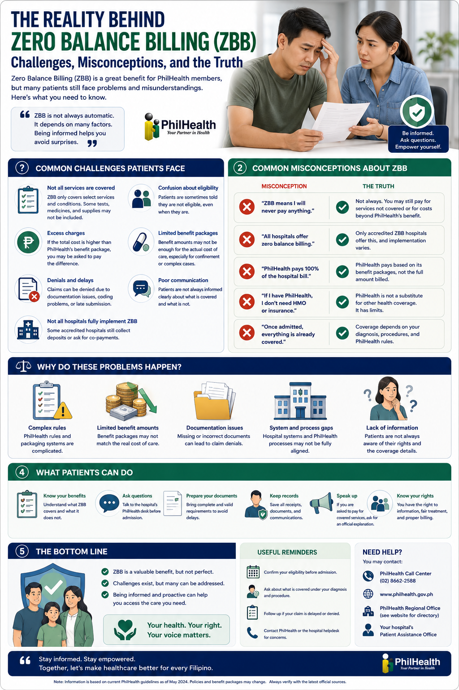

What Is Zero-Balance Billing? Ano ang Zero-Balance Billing? Unsa ang Zero-Balance Billing? Nano ing Zero-Balance Billing?

Zero-Balance Billing (ZBB) is a policy under the Universal Health Care Act (R.A. 11223) that says eligible patients should not be asked to pay any out-of-pocket hospital bill for covered services. PhilHealth and the government absorb the cost. It is a genuine and important protection — but it has limits that most patients do not know about until they are already inside a hospital room. Ang Zero-Balance Billing (ZBB) ay isang patakaran sa ilalim ng Universal Health Care Act (R.A. 11223) na nagsasabing ang mga karapat-dapat na pasyente ay hindi dapat hinihingan ng anumang bayad sa ospital para sa mga nasasaklaw na serbisyo. Ang PhilHealth at gobyerno ang sumasaklaw ng gastos. Ito ay isang tunay at mahalagang proteksyon — ngunit mayroon itong mga limitasyon na karamihang pasyente ay hindi nalalaman hanggang nasa loob na sila ng silid ng ospital. Ang Zero-Balance Billing (ZBB) usa ka patakaran ubos sa Universal Health Care Act (R.A. 11223) nga nag-ingon nga ang mga kwalipikadong pasyente dili angay pangayoan og bisan unsang bayad sa ospital alang sa mga gitakoban nga serbisyo. Ang PhilHealth ug gobyerno ang mosakit sa gasto. Kini usa ka tinuod ug importante nga proteksyon — apan adunay kini mga limitasyon nga kadaghanan sa mga pasyente wala masayud hangtod naas sila na sulod sa kwarto sa ospital. Ing Zero-Balance Billing (ZBB) metung a patakaran sa ilalim ning Universal Health Care Act (R.A. 11223) a nagsasabi a ing mga kwalipikadong pasyente ali dapat hinihingan ning anumang bayad sa ospital para king mga sakup a serbisyo. Ing PhilHealth at gobyerno ing magbabayad. Iti tunay at importante a proteksyon — pero maki itong mga limitasyon a karamihang pasyente ali nalalaman hanggang nasa loob na sila ning kwarto sa ospital.
Here is the key mechanism to understand: PhilHealth does not pay per test, per medicine, or per day of admission. It pays a fixed case rate based on your primary diagnosis. The hospital receives a set amount for, say, community-acquired pneumonia — regardless of whether you needed one IV line or five. This means the hospital, not the patient, absorbs the difference when care costs more than expected. Narito ang pangunahing mekanismo na dapat maunawaan: Ang PhilHealth ay hindi nagbabayad bawat pagsusuri, bawat gamot, o bawat araw ng pag-admit. Nagbabayad ito ng nakatakdang case rate batay sa iyong pangunahing diagnosis. Ang ospital ay tumatanggap ng nakatakdang halaga para sa, halimbawa, community-acquired pneumonia — anuman kung kailangan mo ng isa o limang IV line. Ania ang yawe nga mekanismo nga kinahanglan sabton: Ang PhilHealth dili nagbayad matag test, matag tambal, o matag adlaw sa pag-admit. Nagbayad kini og gitakda nga case rate base sa imong primarya nga diagnosis. Ang ospital nakadawat og gitakda nga kantidad alang sa, pananglitan, community-acquired pneumonia — bisan usa o lima ang IV line nga gikinahanglan nimo. Ari ing pangunahing mekanismo a dapat maunawaan: Ing PhilHealth ali nagbabayad bawat test, bawat gamot, o bawat araw ning pag-admit. Nagbabayad ito ning takdang case rate batay king ating pangunahing diagnosis. Ing ospital tumatanggap ning takdang halaga para king, halimbawa, community-acquired pneumonia — kahit isa o limang IV line ing kailangan.
The 5 Biggest Myths About "Zero Balance" Ang 5 Pinakamalaking Maling Kuru-kuro Tungkol sa "Zero Balance" Ang 5 Labing Dako nga Sayop nga Pagsabot Bahin sa "Zero Balance" Ing 5 Pinakamalaking Maling Pag-unawa Tungkul king "Zero Balance"
These are the assumptions that doctors hear from families every single day at the bedside. Every one of them is understandable. Every one of them is wrong — at least partially. Understanding the gap between expectation and reality is the most important thing you can do before a hospital admission. Ito ang mga pagpapalagay na naririnig ng mga doktor mula sa mga pamilya araw-araw sa tabi ng kama. Lahat ng ito ay maiintindihan. Lahat ng ito ay mali — kahit bahagya. Ang pag-unawa sa agwat sa pagitan ng inaasahan at katotohanan ang pinakamahalaga mong magagawa bago ang pag-admit sa ospital. Kini ang mga pagsabot nga nadungog sa mga doktor gikan sa mga pamilya matag adlaw sa higdaanan. Tanan niini masabtan. Tanan niini sayop — labing menos parsyal. Ang pagsabut sa agwat tali sa gipaabut ug katinuoran mao ang pinaka-importante nga mahimo nimo sa wala pa ang pag-admit sa ospital. Iti ing mga pagpapalagay a naririnig ning deng doktor galing sa mga pamilya araw-araw sa tabi ning higaan. Lahat nito maiintindihan. Lahat nito mali — kahit bahagya. Ing pag-unawa sa agwat sa pag-asa at katotohanan ing pinaka-importante mong magagawa bago ing pag-admit sa ospital.
"Zero balance means I pay absolutely nothing.""Zero balance ibig sabihin wala akong babayaran kahit ano.""Zero balance nagpasabut wala gayod akong bayaran.""Zero balance ibig sabihin wala akung babayaran."
The reality: Zero balance applies to covered services within your benefit package. If your doctor orders a test, medicine, or procedure that falls outside the defined benefit structure — or if your hospital is not fully participating in ZBB — a balance may still appear. "Zero balance" means the covered portion is zeroed out. It does not mean every possible intervention during your stay is free. Ang katotohanan: Ang zero balance ay naaangkop sa mga saklaw na serbisyo sa loob ng iyong benefit package. Kung ang iyong doktor ay mag-order ng pagsusuri, gamot, o pamamaraan na nasa labas ng tinukoy na istraktura ng benepisyo — o kung ang iyong ospital ay hindi ganap na nakikilahok sa ZBB — maaaring lumabas pa rin ang balanse. Ang "zero balance" ay nangangahulugang ang saklaw na bahagi ay nai-zero out. Hindi ito nangangahulugang ang bawat posibleng interbensyon sa panahon ng iyong pananatili ay libre. Ang katinuoran: Ang zero balance naapply sa mga gitakoban nga serbisyo sulod sa imong benefit package. Kung ang imong doktor mag-order og test, tambal, o pamaagi nga wala sa gitino nga istruktura sa benepisyo — o kung ang imong ospital dili bug-os nga naapil sa ZBB — ang balanse mahimong makita pa gihapon. Ang "zero balance" nagpasabut nga ang gitakoban nga bahin mao ang gi-zero out. Dili kini nagpasabut nga ang matag posible nga interbensyon sa imong pag-ostay libre. Ing katotohanan: Ing zero balance naaangkop king mga sakup a serbisyo sa loob ning ating benefit package. Kung ing doktor mag-order ning test, gamot, o pamamaraan a wala sa tinukoy a istraktura ning benepisyo — o kung ing ospital ali buong nakikilahok sa ZBB — maaaring lumabas pa rin ing balanse. Ing "zero balance" ibig sabihin ing sakup a bahagi ing na-zero out. Ali ito ibig sabihin a lahat ning posibleng interbensyon libre.
"The doctor can order any test or treatment and it's all covered.""Maaaring mag-order ang doktor ng kahit anong pagsusuri o paggamot at lahat ay nasasaklaw.""Ang doktor pwedeng mag-order bisan unsang test o pagtambal ug tanan gitakoban.""Maaaring mag-order ing doktor ning kahit anong test o paggamot at lahat sakup."
The reality: Under ZBB, hospitals are reimbursed at a fixed case rate based on your diagnosis — not based on what was actually used. This means your doctor must practice what is called high-value care: ordering tests and treatments that are truly necessary, not ordering everything that might possibly help. This is not cutting corners — it is disciplined, evidence-based medicine. Unnecessary tests do not improve outcomes; they increase costs without benefit. Ang katotohanan: Sa ilalim ng ZBB, ang mga ospital ay binabayaran ng nakatakdang case rate batay sa iyong diagnosis — hindi batay sa kung ano ang talagang ginamit. Nangangahulugan ito na ang iyong doktor ay dapat magsagawa ng tinatawag na high-value care: pag-order ng mga pagsusuri at paggamot na tunay na kinakailangan. Hindi ito pagbabawas ng kalidad — ito ay disiplinadong, evidence-based na medisina. Ang katinuoran: Ubos sa ZBB, ang mga ospital gibayaran sa gitakda nga case rate base sa imong diagnosis — dili base sa kung unsa gyud ang gigamit. Nagpasabut kini nga ang imong doktor kinahanglan mag-practice sa gitawag nga high-value care: pag-order sa mga test ug pagtambal nga tinuod nga gikinahanglan. Dili kini pagputol sa kalidad — kini disiplinado, evidence-based nga medisina. Ing katotohanan: Sa ilalim ning ZBB, ing deng ospital binabayaran ning takdang case rate batay king ating diagnosis — ali batay sa kung nano talaga ing ginamit. Ibig sabihin nito a ing doktor kailangang magsagawa ning tinatawag a high-value care: pag-order ning mga test at paggamot a tunay a kailangan. Ali ito pagbabawas ning kalidad — iti disiplinado, evidence-based a medisina.
"If I stay longer in the hospital, PhilHealth will just keep paying.""Kung mas matagal akong nasa ospital, ang PhilHealth ay patuloy na magbabayad.""Kung mas dugay ko sa ospital, ang PhilHealth magpadayon ug bayad.""Kung mas matagal akung nasa ospital, ing PhilHealth patuloy na magbabayad."
The reality: The fixed case rate does not go up the longer you stay. The hospital receives the same payment whether your stay is 3 days or 10 days. This creates real pressure to discharge patients as soon as they are clinically stable. Your doctor is not rushing you out — but they must make discharge decisions that balance your readiness with a system designed around average lengths of stay. If your case is more complex and requires a longer stay, that additional cost is absorbed by the hospital, not added to your bill. Ang katotohanan: Ang nakatakdang case rate ay hindi tumataas habang mas matagal kang nananatili. Ang ospital ay nakatanggap ng parehong bayad kahit 3 araw o 10 araw ang iyong pananatili. Lumilikha ito ng tunay na presyon upang palayain ang mga pasyente sa lalong madaling panahon na sila ay klinikal na matatag. Hindi ka pinipigil ng iyong doktor — ngunit dapat siyang gumawa ng mga desisyon sa pagpapalabas na nagbabalanse ng iyong kahandaan sa isang sistemang idiniyo para sa average na haba ng pananatili. Ang katinuoran: Ang gitakda nga case rate wala motaas kon mas dugay ka mohigda. Ang ospital nakadawat sa pareho nga bayad bisan 3 ka adlaw o 10 ka adlaw ang imong pag-ostay. Nagmugna kini og tinuod nga presyur sa pagpahalin sa mga pasyente human maayo na sila klinikalmenteng. Ang imong doktor wala nagdali sa imo — apan kinahanglan siyang maghukom bahin sa pagpalakaw nga nagbalanse sa imong pagkaandam sa usa ka sistema nga gidisenyo alang sa kasagarang gitas-on sa pag-ostay. Ing katotohanan: Ing takdang case rate ali tumataas habang mas matagal kang nananatili. Ing ospital tumatanggap ning parehong bayad kahit 3 araw o 10 araw ing ating pananatili. Lumilikha ito ning tunay a presyon para palayain ing mga pasyente agad a sila magiging klinikal a stable. Ali ka pinapalabas agad ning doktor — pero kailangang gumawa siya ning mga desisyon sa pagpapalabas a nagbabalanse ning ating kahandaan sa sistema a dinisenyo para sa average a haba ning pananatili.
"Zero balance works the same in all hospitals.""Ang zero balance ay parehong gumagana sa lahat ng ospital.""Ang zero balance pareho ang pagtrabaho sa tanan nga mga ospital.""Ing zero balance pareho ing trabaho sa lahat ning ospital."
The reality: Implementation varies significantly across hospitals. A large tertiary government hospital has different capacity, staffing, and administrative systems than a rural district hospital. Some hospitals are more fully integrated into ZBB programs than others. Access to specialists, ICU beds, imaging, and laboratory services differs widely. The policy is uniform — the on-the-ground reality is not. Ang katotohanan: Ang pagpapatupad ay nag-iiba-iba nang malaki sa iba't ibang ospital. Ang isang malaking tertiary na pampublikong ospital ay may iba't ibang kakayahan, kawani, at mga sistema ng administrasyon kaysa sa isang rural na distrito ng ospital. Ang patakaran ay pare-pareho — ang katotohanang nasa lupa ay hindi. Ang katinuoran: Ang implementasyon nagkalainlain pag-ayo sa lain-laing mga ospital. Ang usa ka dakong tertiary nga publiko nga ospital adunay lain nga kapasidad, kawani, ug mga sistema sa administrasyon kaysa sa usa ka rural nga distrito nga ospital. Ang palisiya uniporme — ang katinuoran sa yuta dili. Ing katotohanan: Ing implementasyon nagkakaiba nang malaki sa iba't ibang ospital. Ing isang malaking tertiary a pampublikong ospital maki ibang kapasidad, kawani, at mga sistema ning administrasyon kaysa sa isang rural a distrito ng ospital. Ing patakaran uniporme — ing katotohanan sa lupa ali.
"My case is simple so there won't be any surprises.""Simple ang aking kaso kaya walang mga sorpresa.""Simple ang akong kaso busa walay mga sorpresa.""Simple ing aking kaso kaya wala pang sorpresa."
The reality: The healthcare system is built around average clinical scenarios. Real patients are not average. A patient admitted for pneumonia may develop worsening kidney function requiring nephrology consultation. A diabetic patient's wound may not heal as expected. Complications are not failures — they are the reality of medicine. When complications occur, your care becomes more complex and more costly than the original case rate anticipated. Understanding this before admission prevents shock and conflict when it happens. Ang katotohanan: Ang sistema ng pangangalagang pangkalusugan ay itinayo para sa average na mga klinikal na sitwasyon. Ang mga tunay na pasyente ay hindi average. Ang isang pasyenteng na-admit para sa pulmonya ay maaaring magkaroon ng lumalalang pag-andar ng bato na nangangailangan ng konsultasyon sa nefrolohiya. Ang mga komplikasyon ay hindi pagkabigo — ito ang katotohanan ng medisina. Ang katinuoran: Ang sistema sa pag-atiman sa kahimsog gitukod alang sa kasagarang mga klinikal nga sitwasyon. Ang tinuod nga mga pasyente dili kasagaran. Ang usa ka pasyente nga gi-admit alang sa pneumonia mahimong makaangkon sa pagkakomplikado sa kidney nga nagkinahanglan og konsultasyon sa nephrology. Ang mga komplikasyon dili mga kapalasan — kini ang katinuoran sa medisina. Ing katotohanan: Ing sistema ning pag-aalaga sa kalusugan itinayo para sa average a mga klinikal a sitwasyon. Ing mga tunay a pasyente ali average. Metung a pasyente a na-admit para sa pulmonya maaaring magkaroon ning lumalalang pag-andar ning batu na kailangan ning konsultasyon sa nephrology. Ing mga komplikasyon ali mga pagkabigo — iti ing katotohanan ning medisina.
What ZBB Actually Does Cover Ano Talaga ang Sinasaklaw ng ZBB Unsa Gyud ang Gitakoban sa ZBB Nano Talaga ing Sakup ning ZBB
ZBB provides genuine, significant protection. For most straightforward admissions in a participating hospital, the following are covered within the defined benefit structure: Nagbibigay ang ZBB ng tunay, makabuluhang proteksyon. Para sa karamihang simpleng pag-admit sa isang kalahok na ospital, ang mga sumusunod ay nasasaklaw sa loob ng tinukoy na istraktura ng benepisyo: Ang ZBB naghatag og tinuod, makasabot nga proteksyon. Alang sa kadaghanan nga yano nga pag-admit sa usa ka naapil nga ospital, ang mosunod gitakoban sulod sa gitino nga istruktura sa benepisyo: Ing ZBB nagbibigay ning tunay, makabuluhang proteksyon. Para king karamihang simpleng pag-admit sa isang kalahok a ospital, ing mga sumusunod sakup sa loob ning tinukoy a istraktura ning benepisyo:
Room and BoardSilid at PagkainKwarto ug PagkaonKwarto at Pagkain
Ward accommodation and basic meals during your admission are included in the case rate.Ang tirahang ward at pangunahing pagkain sa panahon ng iyong pag-admit ay kasama sa case rate.Ang ward accommodation ug pangunahing pagkaon sa panahon sa imong pag-admit gilakip sa case rate.Ing ward accommodation at pangunahing pagkain sa panahon ning ating pag-admit kasama sa case rate.
Essential DiagnosticsMga Pangunahing DiagnosticMga Pangunahing DiagnosticMga Pangunahing Diagnostic
Core laboratory tests and imaging directly related to your primary diagnosis are covered.Ang mga pangunahing pagsusuri sa laboratoryo at imaging na direktang nauugnay sa iyong pangunahing diagnosis ay nasasaklaw.Ang mga pangunahing pagsusuri sa laboratoryo ug imaging nga direkta nga may kalabotan sa imong primarya nga diagnosis gitakoban.Ing mga pangunahing pagsusuri sa laboratoryo at imaging a direktang may kaugnayan king ating pangunahing diagnosis sakup.
Standard MedicationsMga Karaniwang GamotMga Karaniwang TambalMga Karaniwang Gamot
Medicines on the Philippine National Formulary that are part of standard treatment for your covered diagnosis.Ang mga gamot sa Philippine National Formulary na bahagi ng karaniwang paggamot para sa iyong nasasaklaw na diagnosis.Mga tambal sa Philippine National Formulary nga bahin sa standard nga pagtambal alang sa imong gitakoban nga diagnosis.Ing mga gamot sa Philippine National Formulary a bahagi ning standard a paggamot para king ating sakup a diagnosis.
Professional FeesMga Bayad sa PropesyonalMga Bayad sa PropesyonalMga Bayad sa Propesyonal
Physician fees within the benefit package for services rendered during your covered admission are included.Ang mga bayad ng manggagamot sa loob ng benefit package para sa mga serbisyong ibinigay sa panahon ng iyong nasasaklaw na pag-admit ay kasama.Ang mga bayad sa doktor sulod sa benefit package alang sa mga serbisyo nga gihatag sa panahon sa imong gitakoban nga pag-admit gilakip.Ing mga bayad ning manggagamot sa loob ning benefit package para king mga serbisyong ibinigay sa panahon ning ating sakup a pag-admit kasama.
The bottom line on coverageAng buod ng saklawAng kahuyangan sa gitakobanIng buod ning saklaw
For a straightforward admission — say, uncomplicated pneumonia or a urinary tract infection in a healthy adult — ZBB in a fully participating hospital can genuinely result in no out-of-pocket bill. This is the promise of Universal Health Care, and it works well in those cases. The problem arises when patients assume every admission, in every hospital, for every condition, will be equally covered. Para sa isang simpleng pag-admit — halimbawa, hindi kumplikadong pulmonya o impeksyon sa ihi sa malusog na matatanda — ang ZBB sa isang ganap na kalahok na ospital ay maaaring talagang magresulta sa walang bayad mula sa sariling bulsa. Ito ang pangako ng Universal Health Care, at gumagana ito nang maayos sa mga ganitong kaso. Alang sa usa ka yano nga pag-admit — pananglitan, uncomplicated pneumonia o impeksyon sa ihi sa maayo nga hamtong — ang ZBB sa usa ka bug-os nga naapil nga ospital tinuod nga mahimong magresulta sa walay bayad gikan sa kaugalingon nga bulsa. Kini ang saad sa Universal Health Care, ug kini nagtrabaho nang maayo niadtong mga kaso. Para king isang simpleng pag-admit — halimbawa, hindi kumplikadong pulmonya o impeksyon sa ihi sa malusog a matanda — ing ZBB sa isang buong kalahok a ospital maaaring talagang magresulta sa walang bayad mula sa sariling bulsa. Iti ing pangako ning Universal Health Care, at gumagana ito nang maayos sa mga ganitong kaso.
Where Costs Can Still Appear Kung Saan Maaari Pang Lumabas ang mga Gastos Kung Asa Pa Mahimong Makita ang mga Gasto Kung Ninu Maaaring Lumabas Pa rin ing mga Gastos
Even under ZBB, there are defined situations where out-of-pocket costs may arise. Knowing these in advance is not pessimism — it is practical preparation. Kahit sa ilalim ng ZBB, mayroong mga tinukoy na sitwasyon kung saan maaaring lumabas ang mga gastos mula sa sariling bulsa. Ang pag-alam sa mga ito nang maaga ay hindi pesimismo — ito ay praktikal na paghahanda. Bisan ubos sa ZBB, adunay mga gitino nga sitwasyon diin ang mga gastos gikan sa kaugalingon nga bulsa mahimong makita. Ang pagkahibalo niining daan dili pessimismo — kini praktikal nga pagpangandam. Kahit sa ilalim ning ZBB, maki mga tinukoy a sitwasyon kung ninu maaaring lumabas ing mga gastos mula sa sariling bulsa. Ing pag-alam karing daan ali pessimismo — iti praktikal a paghahanda.
| SituationSitwasyonSitwasyonSitwasyon | Why a gap may occurBakit maaaring lumabas ang agwatNgano mahimong makita ang agwatBakit maaaring lumabas ing agwat |
|---|---|
| Non-formulary medicinesMga gamot na wala sa formularyMga tambal nga wala sa formularyMga gamot a wala sa formulary | If your condition requires a medication not in the Philippine National Formulary, it falls outside the case rate and may be charged separately.Kung ang iyong kondisyon ay nangangailangan ng gamot na wala sa Philippine National Formulary, ito ay nasa labas ng case rate at maaaring singilin nang hiwalay.Kung ang imong kondisyon nagkinahanglan og tambal nga wala sa Philippine National Formulary, kini wala sa case rate ug mahimong singlon nga lahi.Kung ing ating kondisyon kailangan ning gamot a wala sa Philippine National Formulary, iti wala sa case rate at maaaring singilin nang hiwalay. |
| Upgraded roomNa-upgrade na silidGi-upgrade nga kwartoNa-upgrade a kwarto | ZBB covers ward-level accommodation. If you or your family requests a private or semi-private room, the difference is charged out-of-pocket.Ang ZBB ay sumasaklaw sa antas ng ward na tirahan. Kung ikaw o ang iyong pamilya ay humiling ng pribado o semi-pribadong silid, ang pagkakaiba ay sinisingil mula sa sariling bulsa.Ang ZBB nagtabon sa ward-level nga accommodation. Kung ikaw o ang imong pamilya nangayo og pribado o semi-pribadong kwarto, ang kalainan gisingil gikan sa kaugalingon nga bulsa.Ing ZBB sakup ing ward-level a tirahan. Kung ika o ing ating pamilya humiling ning pribado o semi-pribadong kwarto, ing pagkakaiba sinisingil mula sa sariling bulsa. |
| Non-participating hospitalsMga ospital na hindi kalahokMga ospital nga dili naapilMga ospital a ali kalahok | Not all hospitals have fully implemented ZBB. In non-participating or partially participating facilities, standard PhilHealth benefit packages apply, which may not zero out your bill.Hindi lahat ng ospital ay ganap na naipatupad ang ZBB. Sa mga hindi kalahok o bahagiang kalahok na pasilidad, ang mga karaniwang benefit package ng PhilHealth ay naaangkop.Dili tanan nga mga ospital bug-os na nagpatuman sa ZBB. Sa mga dili naapil o parsyal nga naapil nga pasilidad, ang mga standard nga benefit package sa PhilHealth naapply.Ali lahat ning ospital buong naipatupad ing ZBB. Sa mga ali kalahok o bahagyang kalahok a pasilidad, ing mga standard a benefit package ning PhilHealth naaangkop. |
| Elective proceduresMga elektibong pamamaraanMga elective nga pamaagiMga electibong pamamaraan | Planned, non-urgent procedures may have different coverage structures. Always confirm with the hospital's PhilHealth desk before elective admission.Ang mga planado, hindi apurahang pamamaraan ay maaaring may iba't ibang istraktura ng saklaw. Palaging kumpirmahin sa PhilHealth desk ng ospital bago ang elektibong pag-admit.Ang mga planado, dili urgent nga mga pamaagi mahimong adunay lain-laing istruktura sa gitakoban. Kanunay nga pamatuoran sa PhilHealth desk sa ospital sa wala pa ang elective nga pag-admit.Ing mga planado, ali apurahang pamamaraan maaaring maki ibang istraktura ning saklaw. Laging kumpirmahin sa PhilHealth desk ning ospital bago ing electibong pag-admit. |
| Complications and comorbiditiesMga komplikasyon at comorbiditiesMga komplikasyon ug comorbiditiesMga komplikasyon at comorbidities | When your case evolves beyond the average clinical model, resource use exceeds what the case rate covers. The hospital absorbs this — but it may affect what services are readily available.Kapag ang iyong kaso ay lumampas sa average na klinikal na modelo, ang paggamit ng mapagkukunan ay lumagpas sa tinasaklaw ng case rate. Ang ospital ang sumasaklaw nito — ngunit maaari itong makaapekto sa mga serbisyong madaling makuha.Kung ang imong kaso milabaw sa kasagarang klinikal nga modelo, ang paggamit sa kahinguhaan milabaw sa gisaklaw sa case rate. Ang ospital ang moabsorb niini — apan mahimong makaapekto kini sa mga serbisyo nga dali makuha.Kung ing ating kaso lumampas sa average a klinikal a modelo, ing paggamit ning mapagkukunan lumampas sa tinasaklaw ning case rate. Ing ospital ing mag-absorb nito — pero maaari itong makaapekto sa mga serbisyong madaling makuha. |
The System Is Getting Smarter: From Case Rates to DRGs Ang Sistema ay Nagiging Mas Matalino: Mula sa Case Rates hanggang sa DRGs Ang Sistema Nagapostigo: Gikan sa Case Rates hangtod sa DRGs Ing Sistema Nagiging Mas Matalino: Mula sa Case Rates hanggang sa DRGs
Here is the most important reform in Philippine health financing in a generation: PhilHealth is transitioning from the current All Case Rates (ACR) model to a Diagnosis-Related Group (DRG) payment system. This is genuinely good news for patients with complex conditions — and it directly addresses the biggest weakness of the current system. Narito ang pinaka-mahalagang reporma sa pagpopondo ng kalusugan sa Pilipinas sa isang henerasyon: Ang PhilHealth ay lumilipat mula sa kasalukuyang modelo ng All Case Rates (ACR) patungo sa isang sistema ng pagbabayad na Diagnosis-Related Group (DRG). Ito ay tunay na magandang balita para sa mga pasyenteng may kumplikadong kondisyon — at direkta nitong tinutugunan ang pinakamalaking kahinaan ng kasalukuyang sistema. Ania ang pinaka-importante nga reporma sa pinansyal sa kahimsog sa Pilipinas sa usa ka henerasyon: Ang PhilHealth nagbalhin gikan sa kasamtangang modelo sa All Case Rates (ACR) paingon sa usa ka sistema sa pagbayad nga Diagnosis-Related Group (DRG). Kini tinuod nga maayong balita alang sa mga pasyente nga adunay komplikadong kondisyon — ug direkta niining gitubag ang pinakadako nga kakulangan sa kasamtangang sistema. Ari ing pinaka-importante a reporma sa pagpopondo ning kalusugan king Pilipinas sa metung a henerasyon: Ing PhilHealth lumilipat mula sa kasalukuyang modelo ning All Case Rates (ACR) patungo sa isang sistema ning pagbabayad a Diagnosis-Related Group (DRG). Iti tunay a maganang balita para king mga pasyente a maki kumplikadong kondisyon — at direkta nitong tinutugunan ing pinakamalaking kahinaan ning kasalukuyang sistema.
What Is the Difference?Ano ang Pagkakaiba?Unsa ang Kalainan?Nano ing Pagkakaiba?
| All Case Rates (ACR) — CurrentAll Case Rates (ACR) — KasalukuyanAll Case Rates (ACR) — KasamtanganAll Case Rates (ACR) — Kasalukuyan | Diagnosis-Related Groups (DRG) — IncomingDiagnosis-Related Groups (DRG) — PaparatingDiagnosis-Related Groups (DRG) — DaratingDiagnosis-Related Groups (DRG) — Parating | |
|---|---|---|
| How payment is setPaano itinakda ang bayadUnsaon pagbutang sa bayadPaano itinakda ing bayad | One flat rate per diagnosis — same payment whether patient is young and healthy or elderly with 5 comorbiditiesIsang flat rate bawat diagnosis — parehong bayad kahit ang pasyente ay bata at malusog o matanda na may 5 comorbiditiesUsa ka flat rate matag diagnosis — pareho nga bayad bisan ang pasyente bata ug maayo o tigulang nga adunay 5 comorbiditiesIsang flat rate bawat diagnosis — parehong bayad kahit ing pasyente bata at malusog o matanda a maki 5 comorbidities | Payment is adjusted based on diagnosis plus severity, comorbidities, complications, age, and resource use — more complex patients generate higher reimbursementAng bayad ay ina-adjust batay sa diagnosis kasama ang kalubhaan, comorbidities, komplikasyon, edad, at paggamit ng mapagkukunan — ang mas kumplikadong mga pasyente ay nagbibigay ng mas mataas na reimbursementAng bayad gi-adjust base sa diagnosis plus ang grabidad, comorbidities, komplikasyon, edad, ug paggamit sa kahinguhaan — ang mas komplikadong mga pasyente naghatag og mas taas nga reimbursementIng bayad ina-adjust batay sa diagnosis kasama ing kalubhaan, comorbidities, komplikasyon, edad, at paggamit ning mapagkukunan — ing mas kumplikadong mga pasyente nagbibigay ning mas mataas a reimbursement |
| Impact on complex patientsEpekto sa mga kumplikadong pasyenteEpekto sa mga komplikadong pasyenteEpekto sa mga kumplikadong pasyente | Hospital loses money on complex, multi-morbid patients — the case rate was priced for an average patient, not for youAng ospital ay nawawalan ng pera sa mga kumplikado, multi-morbid na pasyente — ang case rate ay pinresyo para sa average na pasyente, hindi para sa iyoAng ospital nawad-an og kwarta sa mga komplikado, multi-morbid nga pasyente — ang case rate gipresuyo alang sa kasagarang pasyente, dili alang kanimoIng ospital nawawalan ning pera sa mga kumplikado, multi-morbid a pasyente — ing case rate presyuhan para sa average a pasyente, ali para kekata | Hospital receives more appropriate reimbursement for complex cases — reducing financial pressure to limit care for high-needs patientsAng ospital ay tumatanggap ng mas naaangkop na reimbursement para sa mga kumplikadong kaso — binabawasan ang pinansiyal na presyon upang limitahan ang pangangalaga para sa mga pasyenteng may mataas na pangangailanganAng ospital nakadawat og mas angay nga reimbursement alang sa mga komplikadong kaso — nagpagamay sa pinansiyal nga presyur sa paglimitasyon sa pag-atiman alang sa mga pasyente nga adunay taas nga kinahanglanonIng ospital tumatanggap ning mas angkop a reimbursement para sa mga kumplikadong kaso — binabawasan ing pinansiyal a presyon para limitahan ing alaga para king mga pasyente a maki mataas a pangangailangan |
| How doctor’s decisions are supportedPaano sinusuportahan ang mga desisyon ng doktorUnsaon pagsuporta sa mga desisyon sa doktorPaano sinusuportahan ing mga desisyon ning doktor | Flat rate creates pressure to order fewer tests and discharge earlier, regardless of clinical needAng flat rate ay lumilikha ng presyon upang mag-order ng mas kaunting pagsusuri at mas maagahan ang pagpapalabas, anuman ang klinikal na pangangailanganAng flat rate nagmugna og presyur sa pag-order og mas gamay nga mga test ug mas sayo nga pagpalakaw, bisan unsa pa ang klinikal nga kinahanglanonIng flat rate lumilikha ning presyon para mag-order ning kaunting mga test at mas maagahan ing pagpapalabas, kahit ano ing klinikal a pangangailangan | DRG payment better aligns financial incentives with clinical reality — appropriate care for complex patients becomes financially sustainable for hospitalsAng DRG payment ay mas iniaayon ang mga pinansiyal na insentibo sa klinikal na katotohanan — ang naaangkop na pangangalaga para sa mga kumplikadong pasyente ay nagiging pinansiyal na napapanatili para sa mga ospitalAng DRG payment mas nag-align sa mga pinansiyal nga insentibo sa klinikal nga katinuoran — ang angay nga pag-atiman alang sa mga komplikadong pasyente nagiging pinansiyal nga mapanagana alang sa mga ospitalIng DRG payment mas ini-align ing mga pinansiyal a insentibo sa klinikal a katotohanan — ing angkop a alaga para sa mga kumplikadong pasyente nagiging pinansiyal a napapanatili para sa mga ospital |
| Documentation burdenBigat ng dokumentasyonBurden sa dokumentasyonBigat ning dokumentasyon | Relatively simple coding; primary diagnosis determines paymentMedyo simpleng coding; ang pangunahing diagnosis ang nagtatakda ng bayadMedyo yano nga coding; ang primarya nga diagnosis ang nagtino sa bayadMedyo simpleng coding; ing pangunahing diagnosis ing nagtutukoy ning bayad | Requires precise, complete clinical documentation — all comorbidities, complications, and severity must be properly coded for the hospital to receive correct reimbursementNangangailangan ng tumpak, kumpletong klinikal na dokumentasyon — lahat ng comorbidities, komplikasyon, at kalubhaan ay dapat na wastong na-code para matanggap ng ospital ang tamang reimbursementNagkinahanglan og tukma, kompleto nga klinikal nga dokumentasyon — ang tanan nga comorbidities, komplikasyon, ug grabidad kinahanglan nga husto nga gi-code aron ang ospital makadawat sa husto nga reimbursementKailangan ning tumpak, kumpletong klinikal a dokumentasyon — lahat ning comorbidities, komplikasyon, at kalubhaan kailangang wastong na-code para matanggap ning ospital ing tamang reimbursement |
What this means for you as a patientAno ang ibig sabihin nito para sa iyo bilang pasyenteUnsa kini nagpasabut alang kanimo isip pasyenteNano ing ibig sabihin nito para kekata bilang pasyente
- If you have CKD, diabetes, heart disease, or multiple conditions: Under DRG, your hospital will be reimbursed more appropriately for the true complexity of your care — reducing the financial pressure that currently leads to shorter stays and fewer tests for complex patients.Kung mayroon kang CKD, diabetes, sakit sa puso, o maraming kondisyon: Sa ilalim ng DRG, ang iyong ospital ay mas naaangkop na mababayaran para sa tunay na kumplikasyon ng iyong pangangalaga — binabawasan ang pinansiyal na presyon na kasalukuyang humahantong sa mas maikling pananatili at mas kaunting pagsusuri para sa mga kumplikadong pasyente.Kung adunay kang CKD, diabetes, sakit sa kasingkasing, o daghang kondisyon: Ubos sa DRG, ang imong ospital mas angay nga mabayaran alang sa tinuod nga komplikasyon sa imong pag-atiman — nagpagamay sa pinansiyal nga presyur nga karon nagtultol sa mas mubo nga pag-ostay ug mas gamay nga mga test alang sa mga komplikadong pasyente.Kung maki kang CKD, diabetes, sakit sa puso, o daming kondisyon: Sa ilalim ning DRG, ing ating ospital mas angkop na mababayaran para sa tunay a kumplikasyon ning ating alaga — binabawasan ing pinansiyal a presyon a kasalukuyang humahantong sa mas maikling pananatili at kaunting mga test para sa mga kumplikadong pasyente.
- Accurate documentation of your conditions matters more than ever: Under DRG, the hospital is paid based on the complete picture of your health. Make sure your doctor knows and records all your active diagnoses — not just the reason for admission. An undocumented comorbidity means the hospital is underpaid for your care, which creates exactly the pressure ZBB is meant to eliminate.Ang tumpak na dokumentasyon ng iyong mga kondisyon ay mas mahalaga kaysa dati: Sa ilalim ng DRG, ang ospital ay binabayaran batay sa kumpletong larawan ng iyong kalusugan. Tiyaking alam at nire-record ng iyong doktor ang lahat ng iyong mga aktibong diagnosis — hindi lamang ang dahilan ng pag-admit.Ang tukma nga dokumentasyon sa imong mga kondisyon mas importante kaysa kaniadto: Ubos sa DRG, ang ospital gibayaran base sa kompleto nga litrato sa imong kahimsog. Siguroha nga nahibaloan ug na-record sa imong doktor ang tanan nimo nga aktibong mga diagnosis — dili lang ang hinungdan sa pag-admit.Ing tumpak a dokumentasyon ning ating mga kondisyon mas mahalaga kaysa dati: Sa ilalim ning DRG, ing ospital binabayaran batay sa kumpletong larawan ning ating kalusugan. Tiyakin a alam at nire-record ning ating doktor ing lahat ning ating aktibong mga diagnosis — ali lamang ing dahilan ning pag-admit.
- The system is not perfect yet — but it is moving in the right direction. DRG implementation in the Philippines is phased and ongoing. Ask your hospital if they are already operating under DRG classifications, as this affects how your care is coded and billed.Ang sistema ay hindi pa perpekto — ngunit ito ay gumagalaw sa tamang direksyon. Ang implementasyon ng DRG sa Pilipinas ay phasado at nagpapatuloy. Tanungin ang iyong ospital kung nag-ooperate na sila sa ilalim ng mga klasipikasyon ng DRG.Ang sistema dili pa perpekto — apan nagmobili kini sa hustong direksyon. Ang implementasyon sa DRG sa Pilipinas phasado ug nagpadayon. Pangutana ang imong ospital kung naglihok na sila ubos sa mga klasipikasyon sa DRG.Ing sistema ali pa perpekto — pero gumagalaw ito sa tamang direksyon. Ing implementasyon ning DRG king Pilipinas phasado at nagpapatuloy. Tanungin ing ating ospital kung nag-ooperate na sila sa ilalim ning mga klasipikasyon ning DRG.
A note on what DRG means for your doctorIsang tala tungkol sa ibig sabihin ng DRG para sa iyong doktorUsa ka tala bahin sa unsa ang DRG nagpasabut alang sa imong doktorIsang tala tungkul sa ibig sabihin ning DRG para sa ating doktor
DRG systems require more detailed and precise clinical documentation — every comorbidity, every complication, every procedure must be accurately coded. This actually works in your favour: it incentivizes your physician to document your full clinical picture completely. The more accurately your internist or nephrologist records the complexity of your case, the more appropriately the hospital is reimbursed, and the less financial pressure there is on the system to cut corners in your care.Ang mga sistema ng DRG ay nangangailangan ng mas detalyado at tumpak na klinikal na dokumentasyon — bawat comorbidity, bawat komplikasyon, bawat pamamaraan ay dapat na tumpak na naka-code. Ito ay talagang nagtatrabaho para sa iyong kapakanan: nagbibigay ito ng insentibo sa iyong manggagamot na ganap na idokumento ang iyong buong klinikal na larawan.Ang mga sistema sa DRG nagkinahanglan og mas detalyado ug tukma nga klinikal nga dokumentasyon — ang matag comorbidity, matag komplikasyon, matag pamaagi kinahanglan nga tukma nga gi-code. Kini nagtrabaho sa imong pabor: naghatag kini og insentibo sa imong doktor sa bug-os nga pag-dokumentar sa imong tibuok klinikal nga litrato.Ing mga sistema ning DRG kailangan ning mas detalyado at tumpak a klinikal a dokumentasyon — bawat comorbidity, bawat komplikasyon, bawat pamamaraan kailangang tumpak na na-code. Iti nagtratrabaho para sa ating kapakanan: nagbibigay ito ning insentibo sa ating manggagamot para ganap na idokumento ing ating buong klinikal a larawan.
Complex Patients in a Standardized System Mga Kumplikadong Pasyente sa isang Standardisadong Sistema Mga Komplikadong Pasyente sa usa ka Standardisadong Sistema Mga Kumplikadong Pasyente sa Standardisadong Sistema
The hardest truth about ZBB is this: the system is designed around an average patient. Medicine is not about average patients. Take the example Dr. Cabral discussed at the PCP Convention: a 67-year-old woman with diabetes, hypertension, and kidney disease admitted for pneumonia. She is not a simple case. She may need nephrology consultation, closer monitoring, longer stay. The case rate was priced for an uncomplicated community-acquired pneumonia. The mismatch between model and reality is where patient and family expectations get tested. Ang pinakamahirap na katotohanan tungkol sa ZBB ay ito: ang sistema ay idiniyo para sa isang average na pasyente. Ang medisina ay hindi tungkol sa mga average na pasyente. Kunin ang halimbawa na tinalakay ni Dr. Cabral sa PCP Convention: isang 67-taong-gulang na babae na may diabetes, hypertension, at sakit sa bato na na-admit para sa pulmonya. Hindi siya isang simpleng kaso. Maaaring kailanganin niya ang konsultasyon sa nefrolohiya, mas malapit na pagmamasid, mas matagal na pananatili. Ang pinaka-lisud nga katinuoran bahin sa ZBB mao kini: ang sistema gidisenyo alang sa kasagarang pasyente. Ang medisina dili bahin sa kasagarang mga pasyente. Kuha ang pananglitan nga gihisgutan ni Dr. Cabral sa PCP Convention: usa ka 67-anyos nga babae nga adunay diabetes, hypertension, ug sakit sa kidney nga gi-admit alang sa pneumonia. Dili siya usa ka yano nga kaso. Mahimong kinahanglan niya ang konsultasyon sa nephrology, mas duol nga monitoring, mas dugay nga pag-ostay. Ing pinaka-mahirap a katotohanan tungkul sa ZBB iti: ing sistema dinisenyo para sa isang average a pasyente. Ing medisina ali tungkul sa mga average a pasyente. Kunin ing halimbawa a tinalakay ni Dr. Cabral sa PCP Convention: isang 67-taong-gulang a babae a maki diabetes, hypertension, at sakit sa batu a na-admit para sa pulmonya. Ali siya isang simpleng kaso. Maaaring kailangan niya ning konsultasyon sa nephrology, mas malapit a pagmamasid, mas matagal a pananatili.
The standard case model vs. your real caseAng pamantayang modelo ng kaso kumpara sa iyong tunay na kasoAng standard nga modelo sa kaso kumpara sa imong tinuod nga kasoIng standard a modelo ning kaso kumpara sa ating tunay a kaso
- Standard model: single diagnosis, predictable course, defined length of stayPamantayang modelo: solong diagnosis, predictable na kurso, tinukoy na haba ng pananatiliStandard nga modelo: usa ka diagnosis, predictable nga kurso, gitino nga gitas-on sa pag-ostayStandard a modelo: isang diagnosis, predictable a kurso, tinukoy a haba ning pananatili
- Real patient with CKD + diabetes + hypertension: multiple active conditions, evolving complications, variable length of stayTunay na pasyente na may CKD + diabetes + hypertension: maraming aktibong kondisyon, nagbabagong mga komplikasyon, variable na haba ng pananatiliTinuod nga pasyente nga adunay CKD + diabetes + hypertension: daghang aktibong kondisyon, nagkabag-o nga mga komplikasyon, variable nga gitas-on sa pag-ostayTunay a pasyente a maki CKD + diabetes + hypertension: daming aktibong kondisyon, nagbabagong mga komplikasyon, variable a haba ning pananatili
- The system is not broken when this happens — it is just not designed for you specificallyAng sistema ay hindi sira kapag nangyari ito — hindi lamang ito diniyo para sa iyo nang partikularAng sistema wala maguba kung kini mahitabo — dili lang kini gidisenyo para sa iyo sa partikularIng sistema ali sira kung ito mangyari — ali lamang ito dinisenyo para kekata nang partikular
This is why patients with multiple chronic conditions — diabetes, kidney disease, heart failure, hypertension — should have a conversation with their nephrologist or internist before any planned admission. Understanding your personal risk profile, what complications to anticipate, and what the coverage realistically looks like for your specific case is the most powerful thing you can do. Kaya naman ang mga pasyenteng may maraming talamak na kondisyon — diabetes, sakit sa bato, heart failure, hypertension — ay dapat magkaroon ng pag-uusap sa kanilang nephrologist o internist bago ang anumang planado na pag-admit. Ang pag-unawa sa iyong personal na profile ng panganib, kung anong mga komplikasyon ang inaasahan, at kung ano ang realidad ng saklaw para sa iyong partikular na kaso ang pinakamakapangyarihang magagawa mo. Mao kini ngano ang mga pasyente nga adunay daghang kronikong kondisyon — diabetes, sakit sa kidney, heart failure, hypertension — angay magtagbo sa ilang nephrologist o internist sa wala pa ang bisan unsang planado nga pag-admit. Ang pagsabut sa imong personal nga profile sa risgo, kung unsa nga mga komplikasyon ang gipaabut, ug kung unsa ang katinuoran sa gitakoban alang sa imong partikular nga kaso mao ang pinaka-gamhanan nga mahimo nimo. Kaya naman ing mga pasyente a maki daming talamak a kondisyon — diabetes, sakit sa batu, heart failure, hypertension — dapat magkaroon ning usapan sa kang nephrologist o internist bago ing anumang planado a pag-admit. Ing pag-unawa sa ating personal a profile ning panganib, kung anong mga komplikasyon ing inaasahan, at kung nano ing katotohanan ning saklaw para sa ating partikular a kaso ing pinaka-makapangyarihang magagawa mo.
You Have Rights as a Patient Under ZBB Mayroon Kang mga Karapatan Bilang Pasyente sa ilalim ng ZBB Adunay Kang mga Katungod Isip Pasyente Ubos sa ZBB Maki Ka Deng Karapatan Bilang Pasyente sa Ilalim ning ZBB
Right to InformationKarapatang MalamanKatungod sa ImpormasyonKarapatang Malaman
You have the right to ask what is and is not covered under your PhilHealth package before any procedure or test is performed.Mayroon kang karapatang itanong kung ano ang nasasaklaw at hindi sa iyong PhilHealth package bago isagawa ang anumang pamamaraan o pagsusuri.Adunay kang katungod sa pagpangutana kung unsa ang gitakoban ug dili sa imong PhilHealth package sa wala pa buhaton ang bisan unsang pamaagi o test.Maki kang karapatang itanong kung nano ing sakup at ali sa ating PhilHealth package bago isagawa ing anumang pamamaraan o test.
Right to an Itemized BillKarapatang Makatanggap ng Itemized na SingilKatungod sa Itemized nga BillKarapatang Makatanggap ning Itemized a Singil
Request a complete, itemized statement of all charges. You are entitled to understand exactly what you are being billed for and why.Humiling ng kumpletong, itemized na pahayag ng lahat ng mga singil. Mayroon kang karapatang maunawaan kung para saan ka eksaktong sinisingil at bakit.Pangayoa ang usa ka kumpleto, itemized nga pahayag sa tanan nga mga singil. Adunay kang katungod sa pagsabut kung unsay eksaktong gisingil kanimo ug ngano.Humingi ning kumpletong, itemized a pahayag ning lahat ning mga singil. Maki kang karapatang maunawaan kung para saan ka eksaktong sinisingil at bakit.
Right to the PhilHealth DeskKarapatang Pumunta sa PhilHealth DeskKatungod sa PhilHealth DeskKarapatang Pumunta sa PhilHealth Desk
Every accredited hospital has a PhilHealth desk. Visit it on admission — not at discharge. Ask about your specific coverage, benefit package, and any pre-authorization requirements.Ang bawat akreditadong ospital ay may PhilHealth desk. Bisitahin ito sa pag-admit — hindi sa pagpapalabas. Itanong ang iyong partikular na saklaw, benefit package, at anumang mga kinakailangan sa pre-authorization.Ang matag akreditadong ospital adunay PhilHealth desk. Bisitaha kini sa pag-admit — dili sa pagpalakaw. Pangutana bahin sa imong partikular nga gitakoban, benefit package, ug bisan unsang mga kinahanglanon sa pre-authorization.Ing bawat akreditadong ospital maki PhilHealth desk. Bisitahin ito sa pag-admit — ali sa pagpapalabas. Itanong ing ating partikular a saklaw, benefit package, at anumang mga kinakailangan sa pre-authorization.
Right to File a ComplaintKarapatang Mag-file ng ReklamoKatungod sa Pag-file og ReklamoKarapatang Mag-file ning Reklamo
If you believe you were billed incorrectly for a covered service, you may file a complaint with PhilHealth directly through their hotline or regional office.Kung naniniwala kang mali kang sinisingil para sa isang nasasaklaw na serbisyo, maaari kang mag-file ng reklamo sa PhilHealth nang direkta sa pamamagitan ng kanilang hotline o regional na opisina.Kung nagtuo ka nga sayop kang gisingil alang sa usa ka gitakoban nga serbisyo, mahimo kang mag-file og reklamo sa PhilHealth direkta pinaagi sa ilang hotline o regional nga opisina.Kung naniniwala kang mali kang sinisingil para sa isang sakup a serbisyo, maaari kang mag-file ning reklamo sa PhilHealth nang direkta sa pamamagitan ning kang hotline o regional a opisina.
Right to an ExplanationKarapatang Makatanggap ng PaliwanagKatungod sa PagpasabotKarapatang Makatanggap ning Paliwanag
Your doctor should explain why each test, consultation, or treatment is being ordered. Ask politely. A good physician will always take the time to explain the clinical rationale.Ang iyong doktor ay dapat magpaliwanag kung bakit bawat pagsusuri, konsultasyon, o paggamot ay ini-order. Magtanong nang magalang. Ang isang mabuting manggagamot ay palaging maglalaan ng oras upang ipaliwanag ang klinikal na katwiran.Ang imong doktor kinahanglan magpasabot kung ngano ang matag test, konsultasyon, o pagtambal gi-order. Pangutana nang may pagtahud. Ang maayong doktor kanunay magtagal sa pagpasabot sa klinikal nga basehan.Ing doktor dapat magpaliwanag kung bakit bawat test, konsultasyon, o paggamot ini-order. Magtanong nang magalang. Metung a maayung manggagamot laging mag-alay ning oras para ipaliwanag ing klinikal a katwiran.
Right to RefuseKarapatang TumanggiKatungod sa PagdumiliKarapatang Tumanggi
You have the right to refuse a test or procedure — but discuss this with your doctor first. Some tests are essential for your safety. Informed refusal is your right; uninformed refusal can be dangerous.Mayroon kang karapatang tumanggi sa isang pagsusuri o pamamaraan — ngunit talakayin ito muna sa iyong doktor. Ang ilang pagsusuri ay mahalaga para sa iyong kaligtasan. Ang may kaalamang pagtanggi ay iyong karapatan; ang walang kaalamang pagtanggi ay maaaring mapanganib.Adunay kang katungod sa pagdumili sa usa ka test o pamaagi — apan hisguti kini sa imong doktor una. Ang pipila ka mga test mahalaga alang sa imong kaluwasan. Ang may kasayoran nga pagdumili imong katungod; ang walay kasayoran nga pagdumili mahimong peligroso.Maki kang karapatang tumanggi sa isang test o pamamaraan — pero talakayin ito muna sa ating doktor. Ang ilang mga test mahalaga para sa ating kaligtasan. Ing may kaalamang pagtanggi ating karapatan; ing walang kaalamang pagtanggi maaaring mapanganib.
Questions to Ask Before and During Admission Mga Tanong na Dapat Itanong Bago at Sa Panahon ng Pag-admit Mga Pangutana nga Kinahanglan Pangutanon sa Wala pa ug sa Panahon sa Pag-admit Mga Tanong a Dapat Itanong Bago at Sa Panahon ning Pag-admit
The single most protective thing a patient or family can do is ask clear, specific questions early. These are the questions that matter most. Ang pinaka-protektibong bagay na magagawa ng isang pasyente o pamilya ay magtanong ng malinaw, tiyak na mga katanungan nang maaga. Ito ang mga tanong na pinaka-mahalaga. Ang pinaka-protektibong butang nga mahimo sa usa ka pasyente o pamilya mao ang mangutana og klaro, tiyak nga mga pangutana daan. Kini ang mga pangutana nga labing importante. Ing pinaka-protektibong bagay a magagawa ning isang pasyente o pamilya iti ang magtanong ning malinaw, tiyak a mga tanong nang maaga. Iti ing mga tanong a pinaka-mahalaga.
Ask the PhilHealth desk on admissionItanong sa PhilHealth desk sa pag-admitPangutana sa PhilHealth desk sa pag-admitItanong sa PhilHealth desk sa pag-admit
- "Is this hospital fully participating in Zero-Balance Billing?""Ang ospital na ito ba ay ganap na kalahok sa Zero-Balance Billing?""Kining ospital ba bug-os nga naapil sa Zero-Balance Billing?""Ing ospital na ito ba buong kalahok sa Zero-Balance Billing?"
- "What is my benefit package for my diagnosis, and what does it include?""Ano ang aking benefit package para sa aking diagnosis, at ano ang kasama nito?""Unsa ang akong benefit package alang sa akong diagnosis, ug unsa ang gilakip niini?""Nano ing aking benefit package para king aking diagnosis, at nano ing kasama nito?"
- "Are there any services that are NOT covered that I should know about before my admission?""Mayroon bang mga serbisyo na HINDI nasasaklaw na dapat kong malaman bago ang aking pag-admit?""Adunay ba mga serbisyo nga DILI gitakoban nga kinahanglan ko mahibaloan sa wala pa ang akong pag-admit?""Maki ba pang mga serbisyo a ALI sakup a dapat kung malaman bago ing aking pag-admit?"
- "If I am referred to a specialist, will the consultation fee also be covered?""Kung ako ay ilalagay sa espesyalista, ang bayad sa konsultasyon ba ay sasasaklawin din?""Kung itugyan ko sa usa ka espesyalista, ang bayad sa konsultasyon ba gitakoban usab?""Kung aku ituturo sa isang espesyalista, ing bayad sa konsultasyon ba sakup din?"
Ask your doctor during roundsItanong sa iyong doktor sa panahon ng roundsPangutana sa imong doktor sa panahon sa roundsItanong sa ating doktor sa panahon ning rounds
- "Why is this test or procedure being ordered? Will it change my treatment?""Bakit ini-order ang pagsusuri o pamamaraang ito? Magbabago ba ang aking paggamot?""Ngano gi-order kining test o pamaagi? Mabag-o ba ang akong pagtambal?""Bakit ini-order ing test o pamamaraang ito? Magbabago ba ing aking paggamot?"
- "Given my other conditions (diabetes, kidney disease, etc.), what complications should I watch for?""Sa aking iba pang mga kondisyon (diabetes, sakit sa bato, atbp.), anong mga komplikasyon ang dapat kong bantayan?""Base sa akong ubang mga kondisyon (diabetes, sakit sa kidney, ug uban pa), unsa nga mga komplikasyon ang kinahanglan ko bantayan?""Base sa aking ibang mga kondisyon (diabetes, sakit sa batu, etc.), anong mga komplikasyon ing dapat kung bantayan?"
- "When will I likely be ready for discharge, and what should I prepare for at home?""Kailan ako malamang na magiging handa para sa pagpapalabas, at ano ang dapat kong ihanda sa bahay?""Kanus-a lagmit ako mahimong andam alang sa pagpalakaw, ug unsa ang akong ipangandam sa balay?""Kailan ako malamang magiging handa para sa pagpapalabas, at nano ing dapat kung ihanda sa bale?"
- "If my condition changes or I need to stay longer, how will that affect my coverage?""Kung magbago ang aking kondisyon o kailangan kong manatili nang mas matagal, paano nito maaapektuhan ang aking saklaw?""Kung mabag-o ang akong kondisyon o kinahanglan kong matigana nga mas dugay, unsaon niini pag-apekto sa akong gitakoban?""Kung magbago ing aking kondisyon o kailangan kung manatili nang mas matagal, paano nito maaapektuhan ing aking saklaw?"

W. G. M. Rivero, MD, FPCP, DPSN
Specialist in Internal Medicine, Nephrology, and Clinical Nutrition. The most common source of conflict between patients and hospitals under ZBB is not the policy itself — it is the gap between what patients expect and what the system can actually deliver. The question "Doc, zero balance po ba ito?" is heard in every ward, every day. My honest answer is always: it depends on your case, your hospital, and your diagnosis. Ask that question early — on admission, at the PhilHealth desk, before any procedure. A prepared patient and family navigate this system far better than one who is surprised at discharge. Espesyalista sa Panloob na Medisina, Nefrolohiya, at Klinikal na Nutrisyon. Ang pinakakaraniwang pinagmulan ng salungatan sa pagitan ng mga pasyente at ospital sa ilalim ng ZBB ay hindi ang patakaran mismo — ito ang agwat sa pagitan ng inaasahan ng mga pasyente at kung ano talaga ang magagawa ng sistema. Ang tanong na "Doc, zero balance po ba ito?" ay naririnig sa bawat ward, bawat araw. Ang aking tapat na sagot ay palagi: depende sa iyong kaso, ospital, at diagnosis. Espesyalista sa Internal nga Medisina, Nefrolohiya, ug Klinikal nga Nutrisyon. Ang labing kasagaran nga tinubdan sa away tali sa mga pasyente ug mga ospital ubos sa ZBB dili ang palisiya mismo — kini ang agwat tali sa gipaabut sa mga pasyente ug kung unsa gyud ang makahimo sa sistema. Ang pangutana nga "Doc, zero balance po ba ito?" nadungog sa matag ward, matag adlaw. Ang akong tapat nga tubag kanunay: depende sa imong kaso, ospital, ug diagnosis. Espesyalista king Panloob a Medisina, Nefrolohiya, at Klinikal a Nutrisyon. Ing pinaka-karaniwan a pinagmulan ning away sa pasyente at ospital sa ilalim ning ZBB ali ing patakaran mismo — iti ing agwat sa pag-asa ning mga pasyente at kung nano talaga ing magagawa ning sistema. Ing tanong a "Doc, zero balance po ba ito?" naririnig sa bawat ward, bawat araw. Ing aking tapat a sagot lagi: depende sa ating kaso, ospital, at diagnosis.
PRC 0105184 · seriousmd.com/doc/williamrivero ·